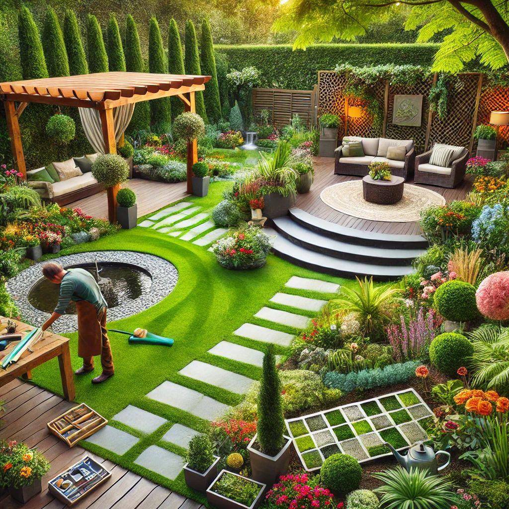

Aménagement Paysager : Sublimez Vos Espaces Extérieurs
L’aménagement paysager est bien plus qu’une simple mise en forme de votre jardin. C’est un véritable art qui allie créativité et expertise technique pour transformer vos espaces extérieurs en lieux harmonieux, fonctionnels et esthétiques. Grâce à notre service d’aménagement paysager, nous concevons des environnements uniques, adaptés à vos envies et à votre cadre de vie.
Une Conception Pensée Pour Vous
Chaque projet commence par une écoute attentive de vos attentes et une analyse approfondie de votre terrain. Nous imaginons des espaces verts personnalisés, intégrant des allées, des terrasses, des bassins, des massifs floraux et du mobilier paysager pour créer une atmosphère qui vous ressemble.
Des Solutions Durables et Esthétiques
Nous privilégions des matériaux de qualité et des végétaux adaptés à votre région pour un aménagement à la fois beau et durable. Grâce à des techniques innovantes et respectueuses de l’environnement, nous optimisons l’entretien et la gestion de l’eau pour un jardin toujours éclatant, quelle que soit la saison.
Un Suivi Complet, de l'Idée à la Réalisation
De la première esquisse à la finalisation de votre espace extérieur, notre équipe d’experts vous guide à chaque étape pour concrétiser votre vision. Grâce à des plans précis et des modélisations 3D, vous pouvez anticiper le rendu final et ajuster chaque détail avant le début des travaux. Nous veillons à ce que chaque élément de votre aménagement paysager soit pensé avec soin pour un résultat harmonieux et durable.
Offrez-vous un extérieur à votre image ! Contactez-nous dès aujourd’hui pour donner vie à votre projet d’aménagement paysager.